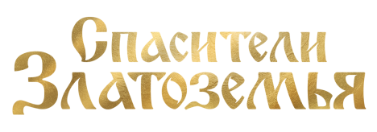

Устали от мрачных историй, восхваляющих антигероев и наполненных псевдореализмом? В «Спасителях Златоземья» нет подмены понятий «хорошего» и «плохого». Можно сказать, это классическое фэнтези.
Первая книга из серии познакомит вас с новым миром, который, тем не менее, покажется знакомым. И это неудивительно, ведь книга отчасти основана на выборочных и адаптированных для сюжета элементах славянского фольклора. Серия не является пародией!
Жизнь в Златоземье текла своим чередом, пока не объявился давно забытый враг Адегор. Он пленил мифическую птицу Мираж — Управительницу природы, и мир оказался во власти непогоды и неурожая.
Местные жители не подозревали, что могущественные силы, некогда правившие на земле, до сих пор существуют и окружают повсюду. Открыть для себя новый мир, полный таинств и загадок, а также сразиться со злодеем предстоит названым братьям...

Лиафар жаждет поскорее воссоединиться с родным человеком и вместе с друзьями отправляется на его поиски. Новые встречи, знакомство с древним народом, участие в сложном испытании, поиски загадочного Звёздного камня… Это то немногое, что ждёт названых братьев на пути.
Тем временем что-то необъяснимое происходит во мраке, скрывающем замыслы врагов. Они остаются в тени и действуют незаметно, но в решающий час перейдут в наступление...

Я прочитала первую книгу из цикла «Спасители Затоземья». В ней подробно раскрываются образы спасителей, их поведение, характер, каждый поступок героя раскрывает весь его внутренний мир. Можно увидеть, как справляясь с каждым препятствием, персонажи становились мудрее и сильнее. Очень интересно наблюдать как за ростом персонажей, так и за ростом их дружбы. Читая последние сцены, хотелось плакать. Сложно писать отзыв не раскрывая основной сюжет, но все сложности нужно учиться преодолевать. Этому меня научила эта книга.
Понравилось легкое повествование истории, автор пишет простым, но в то же время красивым языком. Главные персонажи книги импонируют с самого начала. Полностью раскрывается тема добра и зла. Несомненно запоминающаяся книга, которая увлекает с первых строк. Всем поклонникам фэнтези рекомендую!
Книга Михаила Марка «Спасители Златоземья. Хрустальное сердце» оказалась увлекательной историей со славянскими мотивами и сильной приключенческой составляющей. Было интересно! Пока читала книгу, погружалась в детство. Если говорить современным языком, то это ретеллинг всем давно знакомых сказок, в первую очередь о Кощее. Но, автор создал свой сложный мир, где столько магических существ, что скучать не придётся! Ну и финал оставил очень сильную интригу на вторую книгу! Написано отлично, легко и интересно, а какое качество у книги! Даже в издательствах такие не встретишь порой! Книгу советую читать подросткам от 12 лет и взрослым, особенно тем, кто очень любит сказки!.
Прочитала книгу за полтора дня, даже не прочитала, а проглотила. Главные герои с первых строк вызывают к себе симпатию и доверие. События разворачиваются динамично и интересно, а приключения героев захватывают дух. Автор прекрасно показал мир, хранящий в себе таинства и загадки. Большое спасибо за приятные впечатления! Жду продолжения!
Прочитала книгу за полтора дня, даже не прочитала, а проглотила. Главные герои с первых строк вызывают к себе симпатию и доверие. События разворачиваются динамично и интересно, а приключения героев захватывают дух. Автор прекрасно показал мир, хранящий в себе таинства и загадки. Большое спасибо за приятные впечатления! Жду продолжения!
Прочитала книгу за полтора дня, даже не прочитала, а проглотила. Главные герои с первых строк вызывают к себе симпатию и доверие. События разворачиваются динамично и интересно, а приключения героев захватывают дух. Автор прекрасно показал мир, хранящий в себе таинства и загадки. Большое спасибо за приятные впечатления! Жду продолжения!